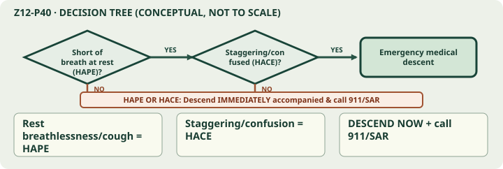

Z12-P40 · Extreme environments · New manuscript
Recognize life-threatening HAPE and HACE and descend immediately
Spot lethal High-Altitude Pulmonary Edema (HAPE) and High-Altitude Cerebral Edema (HACE) early and trigger immediate descent.
When it applies · Any person sleeping or traveling above ~8,000 feet showing severe respiratory or neurological symptoms.
Equipment · Pre-planned rapid descent route, buddy support, emergency communicator/911 and clinical care access.

Actions
- Recognize HAPE (fluid in lungs—leading cause of altitude death): unusual shortness of breath AT REST, severe drop in walking performance, persistent cough (later wet/frothy), chest tightness, blue lips/nails or crackling breath sounds.[X09]
- Recognize HACE (brain swelling—rapidly fatal): loss of balance/coordination (ataxia—cannot walk heel-to-toe straight), confusion, bizarre behavior, slurred speech, hallucinations or extreme drowsiness/coma.[X09, T01]
- Treat suspected HAPE or HACE as a medical emergency. Activate local rescue and arrange urgent safe accompanied descent. Oxygen or other medical measures, if available, must follow trained or dispatcher guidance and must not delay the rescue plan.[X09, T02]
Failure recognition · Telling a staggering, confused or gasping-at-rest climber at 11,000 feet to "sleep it off until morning" inside a tent.[X09]
Verify · Run a quick heel-to-toe balance check and rest-breathing check on any companion struggling unexpectedly above 8,000 feet.[X09, ED]
Stop or change course · Do not ascend or send an impaired person down alone. If descent cannot be undertaken safely, contact rescue immediately and follow emergency guidance.[X09, T02]
Evidence and editorial notes
- T01 · American Red Cross · First Aid Steps (current web edition)
- Section: First Aid Steps > Check the scene; check the person · Conditions: Lay responder in United States; assess safety before contact
Support: Check scene safety, responsiveness, breathing and immediately life-threatening conditions.
Limitations: Lay guidance does not replace advanced clinical or rescue protocols. · Conflicting evidence: None; universal first-response opening gate.
Editorial note: Anchors scene-safety-first rule across Z01. · Specialist reviewer: EMS and wilderness medicine
Primary source · checked 2026-11-24 - T02 · American Red Cross · First Aid Steps (current web edition)
- Section: First Aid Steps > Call 9-1-1 · Conditions: Lay emergency response to unresponsiveness, abnormal breathing or severe bleeding
Support: Activate EMS and get needed equipment. Follow dispatcher directions and act within training.
Limitations: Remote locations may delay EMS arrival, requiring sustained stabilization after activation. · Conflicting evidence: None; aligns with NPS-E.
Editorial note: Mandates early emergency activation and dispatcher adherence. · Specialist reviewer: EMS and wilderness medicine
Primary source · checked 2026-11-24 - X09 · CDC · Travel to High Altitudes (current web edition)
- Section: Travel to High Altitudes > Acclimatization, AMS, HAPE and HACE · Conditions: Mountain travel above ~8,000 feet (2,500 meters)
Support: Ascend gradually to acclimatize; recognize Acute Mountain Sickness (headache, nausea, fatigue) and life-threatening HAPE (shortness of breath at rest, cough) or HACE (ataxia, confusion), for which immediate descent and medical care are essential.
Limitations: Physical fitness does not prevent altitude illness; individual susceptibility varies unpredictably. · Conflicting evidence: None; aligns with NPS-MTN.
Editorial note: Core physiological evidence for Z12 mountain-altitude cards. · Specialist reviewer: Mountain medicine and high-altitude safety
Primary source · checked 2026-11-24
Source lineage · CDC high-altitude travel and wilderness medicine; new manuscript · Classification · New manuscript.